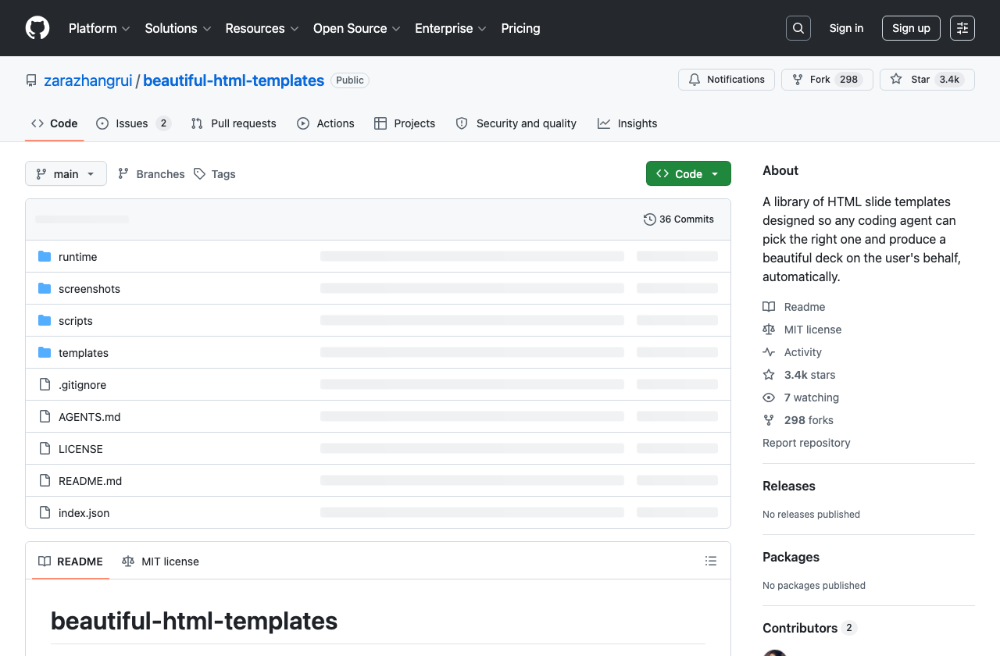

非 AI 时代，我们用 PPT 拖文本框、调图片、改排版，这是合理的。但 AI 更擅长处理结构化文本：标题、段落、卡片、图表、颜色、布局都能被清楚生成和修改。HTML 的优势不只是“好看”，而是更容易被 AI 生成、预览、分享和迭代。
图层、文本框、对象关系复杂。AI 能辅助，但很容易出现对不齐、改一处乱一片的问题。
HTML/CSS/JS 都是文本。你说清楚结构和风格，Codex 就能稳定生成、修改和复用。
本节重点放在一种新的办公协作方式：业务人员提供内容和判断，Codex 负责把它做成可交付的视觉作品。
为什么它比 PPT 更适合 AI 生成、修改、交互和分享。
用模板库让 Codex 继承成熟设计系统，而不是从零写 CSS。
把“我要改哪里”讲清楚，让网页汇报资料可以反复迭代。
标题、段落、卡片、表格、图表都能被明确描述，AI 不需要猜你拖了几个文本框。
生成后直接在浏览器打开，本地就能看，改动也能马上验证。
标签切换、点击放大、输入框、图表动画，都可以变成汇报的一部分。
现在你正在阅读的这一份课程材料，本身就是一个 HTML 页面。它可以像 PPT 一样展示，也可以像网页一样交互；更重要的是，它背后是一份可以被 AI 读懂、修改和版本管理的文本文件。
HTML 更好地接住了 AI Agent
不要从零开始写 CSS。先借一个成熟模板库，让 Codex 继承它的页面比例、字体、颜色、布局和交互规则，再把你的真实内容替换进去。
课程里可以直接引用这个案例：它指向 Zara Zhang 的 beautiful-html-templates，本质是一套给 Codex/AI agent 使用的 HTML slide deck 模板库。
Clone https://github.com/zarazhangrui/beautiful-html-templates and follow the instructions in AGENTS.md to build me a beautiful HTML slide deck.
它通常包含模板页面、CSS/JS、字体、视觉系统、模板索引和一份 AGENTS.md，让 Codex 知道如何挑选、预览和生成。
index.json：描述模板风格
templates/：模板文件夹
AGENTS.md：告诉 Codex 怎么工作
季度复盘、项目汇报、培训材料。
调研结论、趋势洞察、案例整理。
功能介绍、品牌宣言、方案提案。
好的流程不是“把资料丢给 AI 让它自由发挥”，而是让 Codex 先理解场合和风格，给你看候选封面，再进入完整制作。
模板不是素材，而是一套视觉生产方式。
如果你只说“帮我做个好看的网页”，Codex 会猜。更好的方式是把业务场景、听众、风格边界和内容结构一次讲明白。
修改 HTML 的关键是把问题定位清楚：哪一屏、哪个模块、哪里不舒服、希望改成什么。越具体，Codex 越能稳定修改。
例如：开场 section、三张地图卡、第二个 tab、最后的作业表格。
例如：间距太窄、标题太抽象、卡片文字太多、移动端拥挤。
例如：保持现有圆角和配色，只把这里改成三栏案例结构。
在 Codex 的 in-app browser 里打开本地 HTML，先看真实渲染效果，再决定改哪里。
开启 Annotation mode，点选元素；需要框选一块区域时，按住 Shift 再点击。
点评论框旁边的配置按钮，可以改字体、文字、间距、颜色，并在页面上预览效果。
提交评论后，让 Codex 根据这些标注修改 HTML/CSS。参考 OpenAI 官方说明。
| 作业场景 | 选一个你最近要汇报的内容：项目复盘、调研结论、活动方案、培训材料都可以。 |
| 内容结构 | 先写清楚 6-8 个 section：封面、背景、问题、方案、案例、结论、行动。 |
| 风格要求 | 告诉 Codex 场合、听众、正式程度、颜色偏好，以及“不想要什么”。 |
| 验收方式 | 本地打开 HTML，看标题、间距、移动端、图片和交互是否都能正常工作。 |